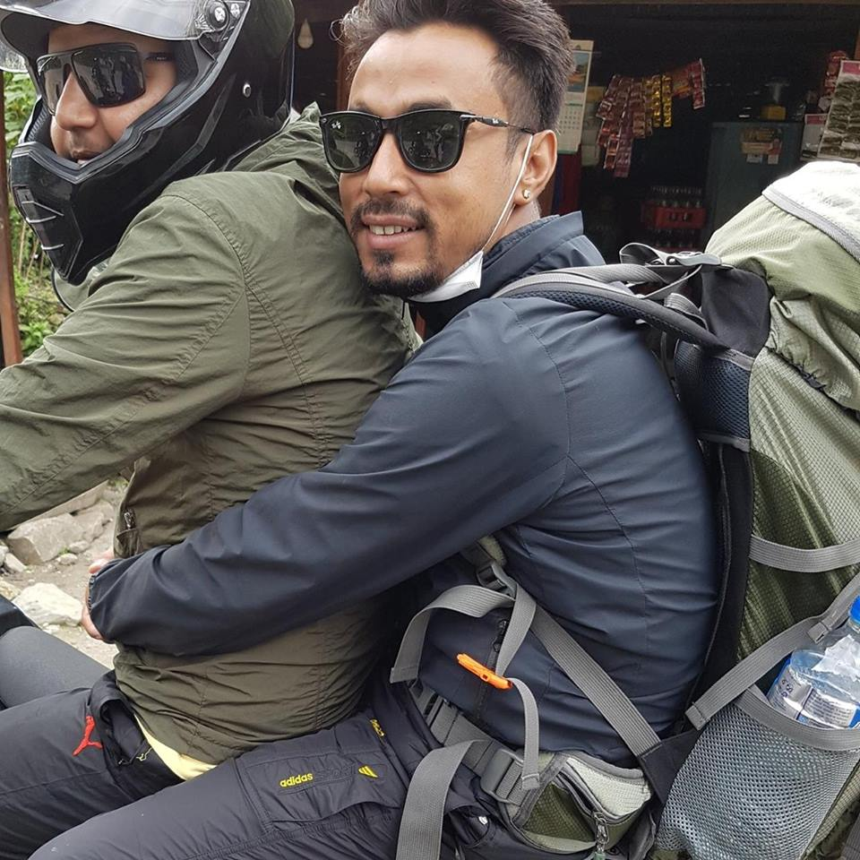

BISHNU G.C.

CAREER OBJECTIVE
I am looking for opportunities that will develop my skills in the industry field so I will be able to make my dream happen.
..................................................................................................................................................
EDUCATION AND TRAINING
2009-2012
Diploma of Engineering majored in Computer
College of Computer Technology (GPA 5 on a 7 point scale)
2018 - Current
BSC (Hons) in Network Engineering
..................................................................................................................................................
PROFESSIONAL SKILLS
• Networking
RELEVANT PROJECTS AND ASSIGNMENTS
2011 C++ based Automobile management system
• Conducted all the group meetings needed
• Evaluated all the reports presented by fellow group mates
• Managed and Assigned all the tasks throughout the project
• Organised the field visit how the software works in real world
..................................................................................................................................................
LANGUAGES SPOKEN
• English
• Nepali
• Hindi
..................................................................................................................................................
EMPLOYMENT HISTORY
Career Related
8th November -2013 to current - Network Operation Control(NOC)
Broad link Network and Communication Pvt. Ltd
..................................................................................................................................................
KEY ACCOMPLISHMENTS:
• Leading and Monitoring the Technical Support Team, Performing scheduled staff reviews,
Communicating and adhering to new Procedures, Policies and Goals.
• Monitoring Queues and assisting with daily goal and conducting quality control to reduce errors to improve procedures.
• Establishing, recommending, and implementing policies to ensure quality timely and efficient design of customer oriented services.
• Handling escalated issues of customers.
• Implement a new project and neatwork design and Troubleshoot the trunk line of network.
• Trouble shooting BTS (basic transceiver station) network & trained new staff.
• Update sales and stock of branch every week .